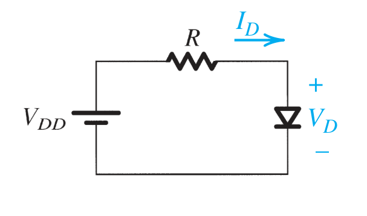
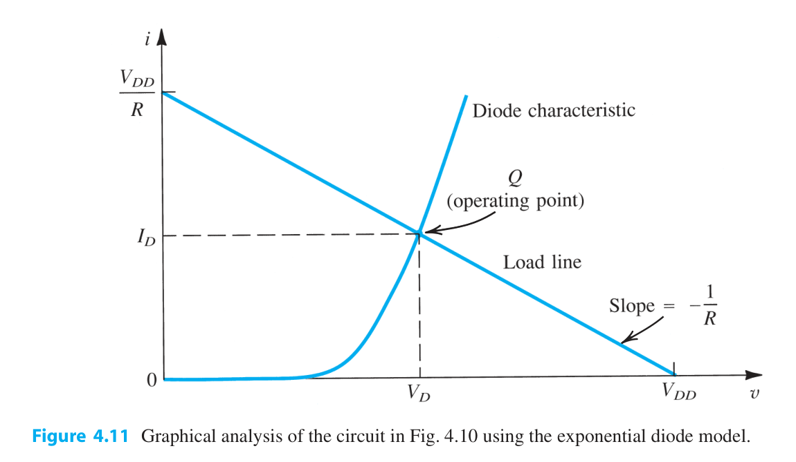
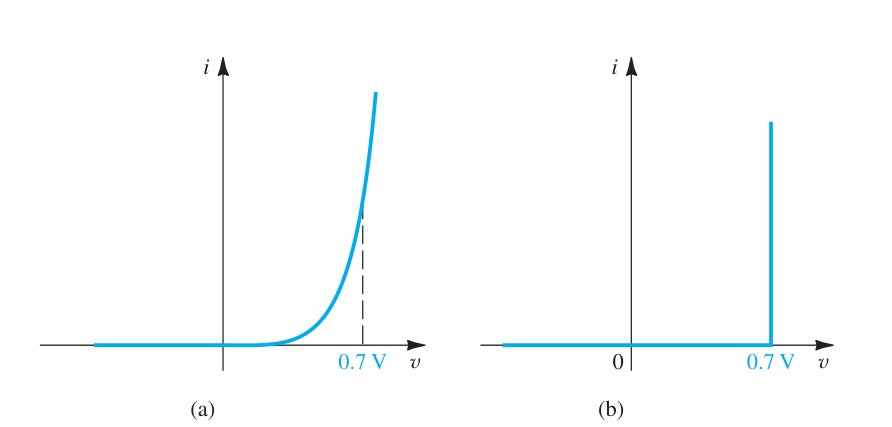
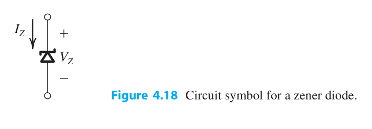
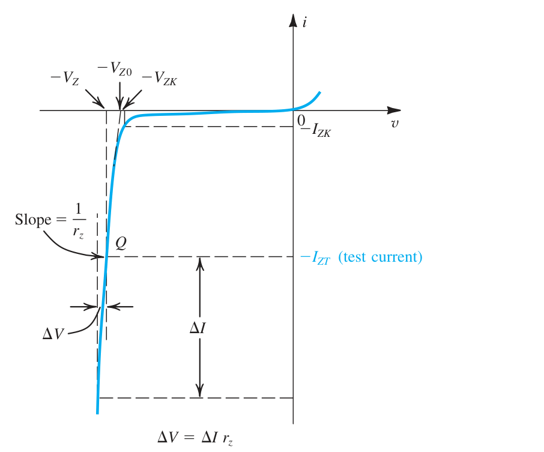

二极管入门(2):实际二极管的实现和建模¶
实际二极管的实现:PN 结¶
PN 结端子特性¶
我们这个部分来聊一聊二极管的实际实现.基本上,我是说基本上,连小孩子都知道二极管就是用 PN 结做的.
问题是,你了解 PN 结嘛?
PN 结之回顾¶
我们现在来回顾一下 PN 结的特性
- \(V>0\),此时加的正向电压,导通,\(I-V\)曲线为\(i=i_s(e^{v/V_{T}}-1)\)
- \(-V_{ZK}<V<0\),此时加的反向电压,截止,电流为饱和电流\(i_s\)
- \(v<-V_{ZK}\),此时 PN 结被击穿.
对上面的一些量值,我们要有一定的认识:
对偏置的研究¶
对于我们正向偏置的\(I-V\)关系,随着我们的\(e\)指数的不断扩大.后面的常数项\(-1\)的影响不断减小,因而我们可以说下面的条件是成立的:
那么我们自自然可以改写下上面的函数
因而
那么我们可以发现,对于在正向偏置区的 PN 结来说:
对正向特性的建模¶
指数模型¶
方程组¶
我们刚刚就对我们的\(-1\)信号做了忽略,所以我们自然认为,对于实际的二极管,我们应当采取这种指数模型来建模.
我们先看到最简单的正偏二极管的电路图:

我们首先假设我们的外加正向电压大于我们的管压降.此时根据我们上面的分析,我们可以认识到:并且根据我们的 Kirchoff 定律,我们还有:
通过上面的两个方程,我们就可以在已知\(i_s\)的情况下,反解出\(i_{D}\)和\(V_{D}\).
图解法,工作点¶
解答上面这个方程组可以通过将两张图像都绘制在我们的\(i-v\)坐标系上面.

我们自然也就能画出上面的两根曲线,结局就是,我们能够画出一个交点,这个叫交点我们称之为工作点.迭代法求工作点¶
压降模型¶
我们不喜欢非线性的元件(尤其是这种指数的),因为一旦联立起来就是超越方程.这个玩意超级难解!!!
我们参考我们之前的理想二极管莫模型,它的导通压降是 0,那么我们引入\(0.7\text{V}\)的导通压降就可以了嘛.下面的图像很好地阐释了这一点

理想二极管模型¶
如果我们的正向压降相较于我们的外加电压非常小,那么自然地我们就可以忽略正向压降的影响,此时压降模型可以直接转化为理想二极管模型.
小信号模型(重要)¶
现在我们还是回到这样的一个电路图.
上面的两个模型在处理二极管的时候,都把它当成了反向直流电源了.这在算工作点和算功率,还有算频率响应的时候都会出问题.
所以我们提出一种新的模型,假设我们的直流正向电压\(V_{DD}\) 改变了,改变成了 \(V_{DD}+\Delta V_{DD}\).这个时候它会造成我们\(I_{D}\)和\(V_{D}\)的变化,假设为\(\Delta I_{D}\)和\(\Delta V_{D}\).
我们现在可以这么做,就是我们把二极管上的电压信号直接写成直流信号\(V_{D}\)和一个交流小信号\(v_{d}(t)\)的和.即:
有了\(v_{d}\)之后,我们可以得到:
代入可以得到:
由我们先前的定义得:
我们现在只要保证\(v_{d}\)很小,即
就可以对\(e^{v_{d}/v_{T}}\)进行泰勒展开:
忽略高阶的无穷小,得到:
又由于:
自然地,我们可以得到:
所以我们发现\(\frac{I_{D}}{v_{T}}\)的单位是西门子,所以我们取其倒数:
称之为交流小信号的动态电阻.对于一般的情况,我们一般这样计算: $$ r_{d}=\frac{1}{\frac{\partial i_{D}}{\partial v_{D}}} (i_{d}=I_{D}) $$
关于交流小信号的验证,有一个关于电源纹波的实例,放在补充包中.
对于正向特性,我们有一个重要的实例:[正向稳压器]
Zener二极管¶
有些时候,我们需要能够承受反向电压的二极管,这是因为,我们的二极管的击穿区的\(i-v\)曲线近似竖直,意味着哪怕我们的电流波动很大,此时的电压也很稳定.所以这种特性让我们可以用来稳压.能够承受反向电压的二极管,我们称之为稳压二极管,又称Zener管.Zener管的图示如下所示:

使得我们的Zener管进入击穿模式的最小电流,称为膝点电流.Zener管反加的电压大于膝点电流对应的电压时,此时我们的电压变化不明显,而电流变化剧烈,如下图所示:

击穿部分的斜率称为齐纳二极管的动态电阻,他一般(在反向区)满足这样的表达式 $$ r_{z}=\frac{\Delta v}{\Delta i} $$ 从\(i-v\)曲线的角度来说,\(r_z\)表现为其反向击穿曲线斜率的倒数.假设对于上面穿过某一定点\(Q\)的斜率为\(\frac{1}{r_{z}}\)的直线的横截距为\(-V_{Z0}\),那么我们就可以这样写我们的表达式(注意下面的式子中的量都是绝对值): $$ V_{Z}=V_{Z0}+I_{Z}R_{Z} $$
齐纳管的一个重要实例是用作分流稳压管.